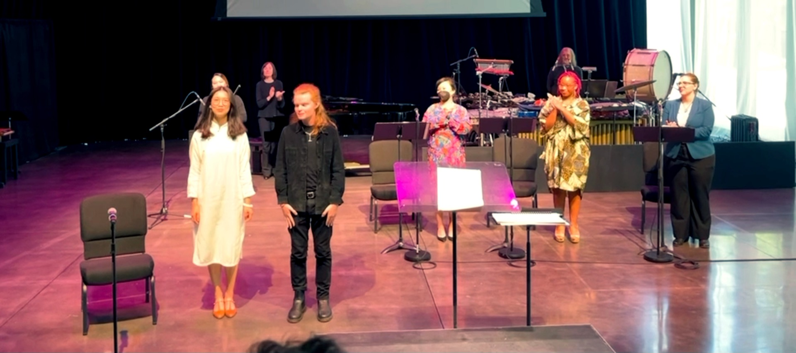

The Lost Genital Department: An Opera
- Myah Rose Paden as Vagina
- Ivy Zhou as Woman
- Rachelle Moss as Clerk
- YeSol Im – Violin
- Cristina Valdez – Piano
- Paul Hansen – Percussion
- Paula Madrigal – Music Director

{kind=link}

A woman goes to the Lost Genital Department to look for her vagina, who has walked off her body. Why would the vagina do this? What are both of them going to do in this situation? Audience members will find out about that together with the clerk, who is, honestly, eager to go home, at 5 o'clock, the end of day.
The 20-min opera is built upon years of research, conversations and field work in collaboration with real human beings with vaginas as well as PTs and sex educators. I dedicate this libretto to them: Tanzania Jenkins-Shaub, Marla Burkholder, Mariah Mennano, Reverend Michelle Simmons, Kendra Balmer,and Al Vernaccio.
Collaborating with composer Mike Powers, musically, our early conversations revolves around what a vagina might sound like, what absurdity sounds like. The musical language we arrived at is one of simple lyricism accompanied by intricate rhythm and harmony. One of Powers' favorite things to do is taking an otherwise straightforward melody and seeing just how much stuff he can surround it with.
It’s probably the first time for many to hear a vagina sing. Perhaps this can suggest a whole new perspective through which we can view our body parts differently, as in this world, they will look us back, talk back, sing back, in a dramatic operatic voice. We are excited to center this voice through our writing and music, and share it with new and old opera audiences. A very important moment to witness: when a vagina begins to sing an aria.
Many thanks to Dennis Robinson Jr, Aiyana Hewitt Mehta, and Seattle Opera for supporting the creation of this opera. The work is mentored by Kelley Rourke and Kamala Sankaram. Special thanks to Adrienne Mackey.